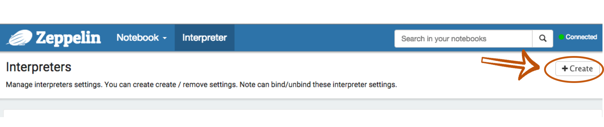

Dynamic Interpreter Loading using REST API
Apache Zeppelin provides pluggable interpreter architecture which results in a wide and variety of the supported backend system. In this section, we will introduce Dynamic interpreter loading using REST API. This concept actually comes from Zeppelin Helium Proposal. Before we start, if you are not familiar with the concept of Zeppelin interpreter, you can check out Overview of Zeppelin interpreter first.
Overview
In the past, Zeppelin was loading interpreter binaries from /interpreter/[interpreter_name] directory. They were configured by zeppelin.interpreters property in conf/zeppelin-site.xml or ZEPPELIN_INTERPRETERS env variables in conf/zeppelin-env.sh. They were loaded on Zeppelin server startup and stayed alive until the server was stopped.
In order to simplify using 3rd party interpreters, we changed this way to dynamically load interpreters from Maven Repository using REST API. Hopefully, the picture below will help you to understand the process.

Load & Unload Interpreters Using REST API
Load
You can load interpreters located in Maven repository using REST API, like this:
( Maybe, you are unfamiliar with [interpreter_group_name] or [interpreter_name]. If so, please checkout Interpreters in Zeppelin again. )
http://[zeppelin-server]:[zeppelin-port]/api/interpreter/load/[interpreter_group_name]/[interpreter_name]
The Restful method will be POST. And the parameters you need are:
Artifact: Maven artifact ( groupId:artifactId:version )
Class Name: Package name + Interpreter class name
Repository ( optional ): Additional maven repository address
For example, if you want to load markdown interpreter to your Zeppelin, the parameters and URL you need may look like:
http://127.0.0.1:8080/api/interpreter/load/md/markdown
{
"artifact": "org.apache.zeppelin:zeppelin-markdown:0.6.0-SNAPSHOT",
"className": "org.apache.zeppelin.markdown.Markdown",
"repository": {
"url": "http://dl.bintray.com/spark-packages/maven",
"snapshot": false
}
}
The meaning of each parameters is:
- Artifact
- groupId: org.apache.zeppelin
- artifactId: zeppelin-markdown
version: 0.6.0-SNAPSHOT
Class Name
Package Name: org.apache.zeppelin
Interpreter Class Name: markdown.Markdown
Repository ( optional )
Url: http://dl.bintray.com/spark-packages/maven
Snapshot: false
Please note: The interpreters you downloaded need to be reload, when your Zeppelin server is down.
Unload
If you want to unload the interpreters using REST API,
http://[zeppelin-server]:[zeppelin-port]/api/interpreter/unload/[interpreter_group_name]/[interpreter_name]
In this case, the Restful method will be DELETE.
What is the next step after Loading ?
Q1. Where is the location of interpreters you downloaded ?
Actually, the answer about this question is in the above picture. Once the REST API is called, the .jar files of interpreters you get are saved under ZEPPELIN_HOME/local-repo first. Then, they will be copied to ZEPPELIN_HOME/interpreter directory. So, please checkout your ZEPPELIN_HOME/interpreter.
Q2. Then, how can I use this interpreter ?
After loading an interpreter, you can use it by creating and configuring it in Zeppelin's Interpreter tab.
Oh, you don't need to restart your Zeppelin server. Because it is Dynamic Loading, you can configure and load it at runtime !
After Zeppelin server up, browse Zeppelin home and click Interpreter tab.

At the Interpreter section, click +Create button.
 Then, you can verify the interpreter list that you loaded.

After choosing an interpreter, you can configure and use it. Don't forget to save it.
Create a new notebook in the Notebook section, then you can bind the interpreters from your interpreter list. Just drag and drop !

At last, you can use your interpreter !
If you want to get the specific information about respective interpreters, please checkout each interpreter documentation.